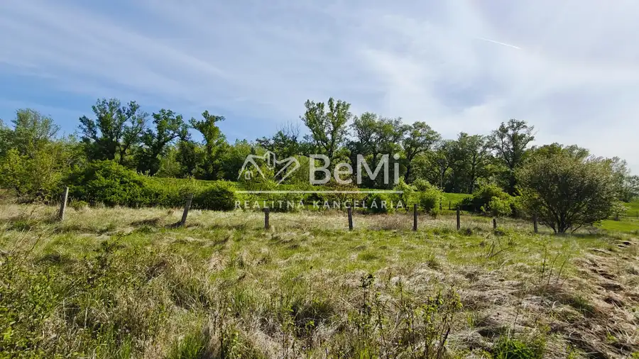
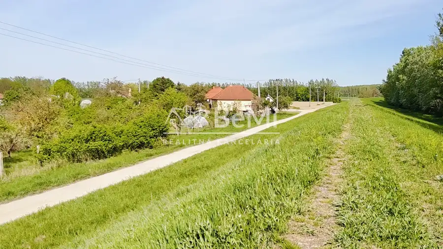
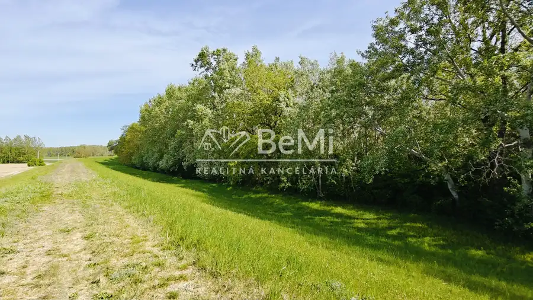

Stavebný pozemok Vlčany 800M2
Vlčany



- Plocha800 m²
- VlastníctvoOsobné
O nehnuteľnosti
Na predaj stavebný pozemok – 800 m²,Vlčany ,okr. ŠaľaPonúkame na predaj atraktívny stavebný pozemok v tichej obci Vlčany, okr. Šaľa. Výmera pozemku 800 m².Šírka pozemku od ulice približne 20 m, čo poskytuje ideálne možnosti pre výstavbu rodinného domu podľa vašich predstáv.Prístup k pozemku je zabezpečený z asfaltovej komunikácie.Všetky inžinierske siete sa nachádzajú priamo pred pozemkom:vodaelektrinaplynkanalizáciaoptický internetPozemok je vhodný na výstavbu rodinného domu, prípadne rekreačnej chalupy . Vďaka veľmi úrodnej pôde, možnosť dopestovania vlastnej zeleniny a ovocia.Nachádza sa v tichej lokalite obce Vlčany, v blízkosti mŕtveho ramena Váhu, čo ponúka príjemné prostredie na bývanie aj oddych.Popri ramene Váhu, v tesnej blízkosti pozemku vedie cyklotrasa. Okrem cyklistiky, sú tu rôzne možnosti aktívneho oddychu a športového vyžitia ( beh po hrádzi, rybolov, vodné aktivity).V obci sa nachádza základná škola spolu s materskou školou, detské ihrisko, potraviny, pohostinstvo.Spojenie obce je zabezpečené verejnou autobusovou dopravou.Cestná vzdialenosť:Vlčany – Šaľa: cca 10 kmVlčany – Nitra: cca 35 kmVlčany – Nové Zámky: cca 25 kmVlčany – Bratislava: cca 80 kmCENA: 42 500 eurV prípade záujmu kontaktujte: Ing. Janka Svobodová, tel.: 0905 411 373,mail: svobodova@realitybemi.skProstredníctvom nášho finančného poradcu Vám pomôžeme s financovaním kúpy nehnuteľností.NAŠE CENY SÚ VRÁTANE PROVÍZIE ZA KOMPLETNÝ SERVIS A SÚ SCHVÁLENÉ MAJITEĽOM
Parametre
- Druh
- Pozemok pre rodinné domy
- Dátum zverejnenia
- 05. 05. 2026
- Plocha pozemku
- 800 m²
- Typ
- Predaj
- Vlastníctvo
- Osobné